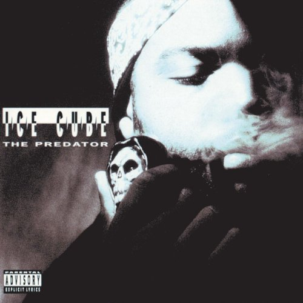

The album’s killer cut is “I Wanna Be Sedated,†to be ranked up there with “Blitzkrieg Bop,â€
“Loudmouth” and “Cretin Hop” as the Ramones’ finest. They retain their wonderful feel for the catchy guitar progression,
even if Johnny Ramone has a limited repertoire of what he can do with it. I’ve never seen him play anything but
power chords onstage, so it’s doubtful whether he’s doing the intricate picking on the slower numbers like “Questioningly.
Nevertheless, the music certainly is listenable, unless you’re a purist. “Don’t Come Close,â€
a semislow song, probably has the best chance as a single. It’s got a nice hook in the melody and nothing offensive in the lyrics.

The Predator
Ice Cube
When Ice Cube released The Predator on November 17, 1992
he certainly had a lot to talk and be angry about at that moment. Death Certificate was the quintessential “angry” hip-hop album,
and The Predator is bursting with resentment. Cube raps a lot about the Rodney King beating, the verdict,
the riots, and the continued abuse by the police in the months that followed. Ice Cube clearly states, “I told you it would happen and you heard it, read itâ€
on the album, about as clear of an “I told you so” as you can get. But there’s also a different sort of anger present.
Throughout the album, Cube focuses much of his fury at people who, after the release of Death Certificate, spent more time being critical of him than listening
closely to what the album had to say.